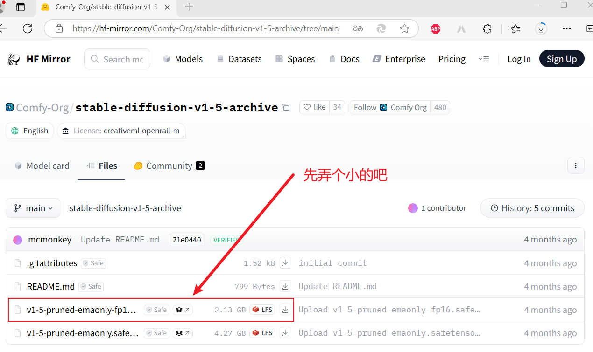

和
感觉真的太贴心了，还有这神器……
下载地址：Releases · comfyanonymous/ComfyUI
| README_VERY_IMPORTANT.txt # 重要说明，一定要先看看
| run_cpu.bat # 使用 CPU 运行 ComfyUI
| run_nvidia_gpu.bat # 使用 nvidia GPU 运行 ComfyUI
|
+---ComfyUI # ComfyUI 项目（GitHub）
+---python_embeded # python 环境
\---update # 更新相关

下载之后放到这里：
你别说还得是人家
记得之前看
选择一个检查点，咱就一个啊，上面下载的那个，之后就可以点击“执行”生成图片了。不得不说人家做的是真带劲儿啊，执行过程中可以实时显示进度，执行到哪个环节了，如下图：
还是老朋友，时间有点久，毕竟岁数大了……经过漫长的等待终于生成了第一张图，图下：
这也是位大神啊！针对国内情况制作了启动器：【AI绘画】ComfyUI整合包发布！解压即用 一键启动 工作流版界面 超多节点 ☆更新 ☆汉化 秋叶整合包_哔哩哔哩_bilibili